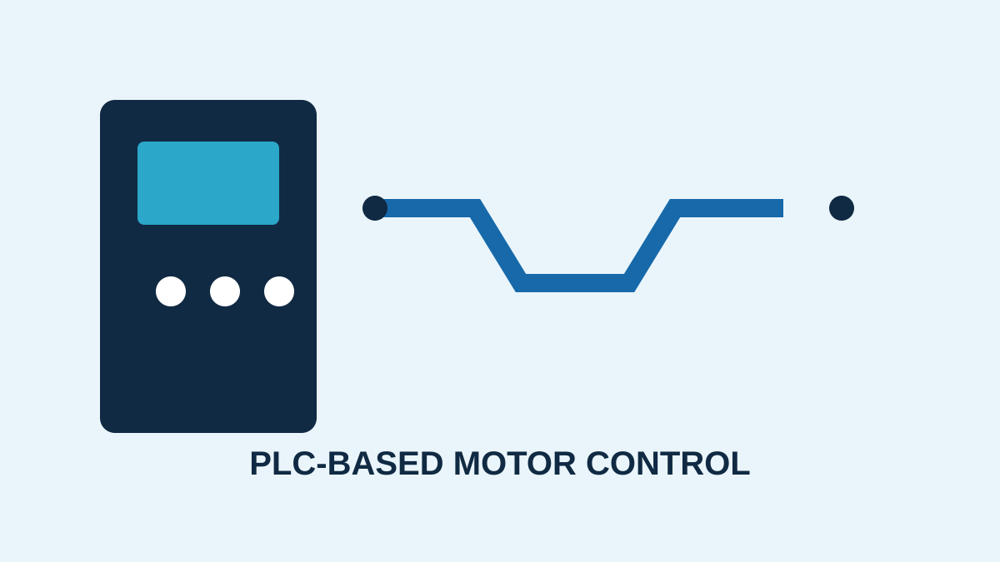
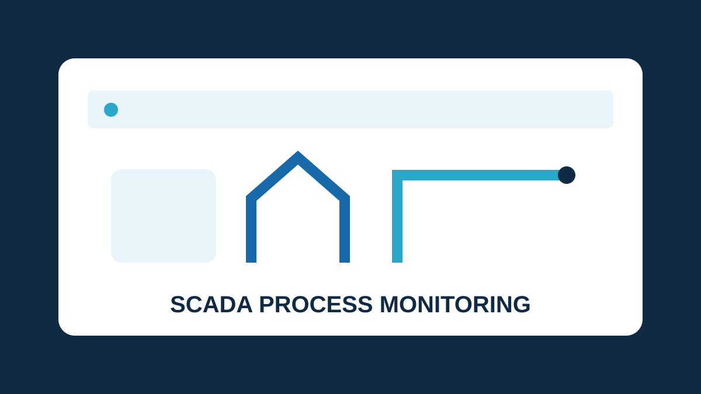
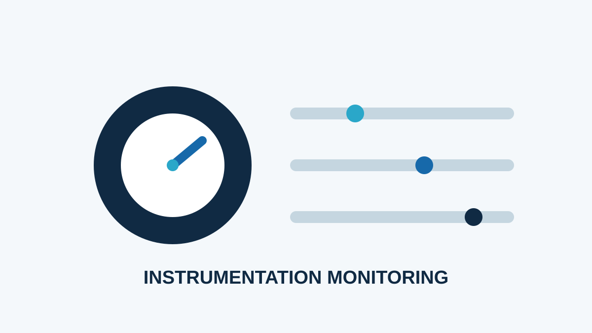

Sample Project
PLC-Based Motor Control
A sample automation project concept for controlling an industrial motor using a PLC, with attention to start/stop logic, interlocks and safe operation.
Project details ↘PROJECTS
Sample project concepts connected to my professional interests in instrumentation, control and industrial automation.

A sample automation project concept for controlling an industrial motor using a PLC, with attention to start/stop logic, interlocks and safe operation.
Project details ↘
A sample SCADA concept for displaying process variables, monitoring equipment status and giving operators a clear view of an industrial process.
Project details ↘
A sample instrumentation concept focused on measuring process variables, calibration records and identifying readings that require technical attention.
Project details ↘NOTE
These are sample project concepts included to demonstrate the required project showcase structure. They are presented as concepts rather than as completed Computer Science projects.